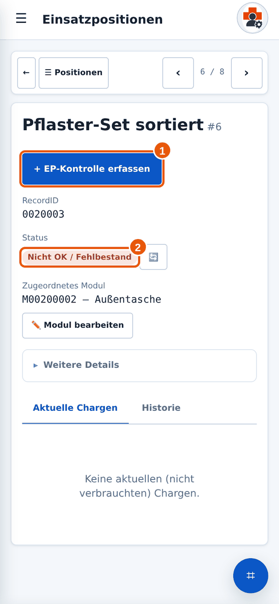
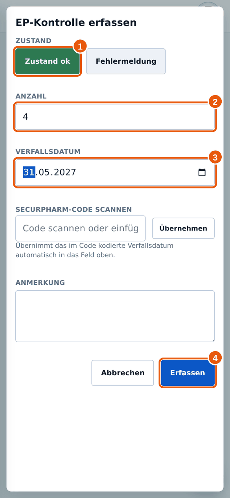
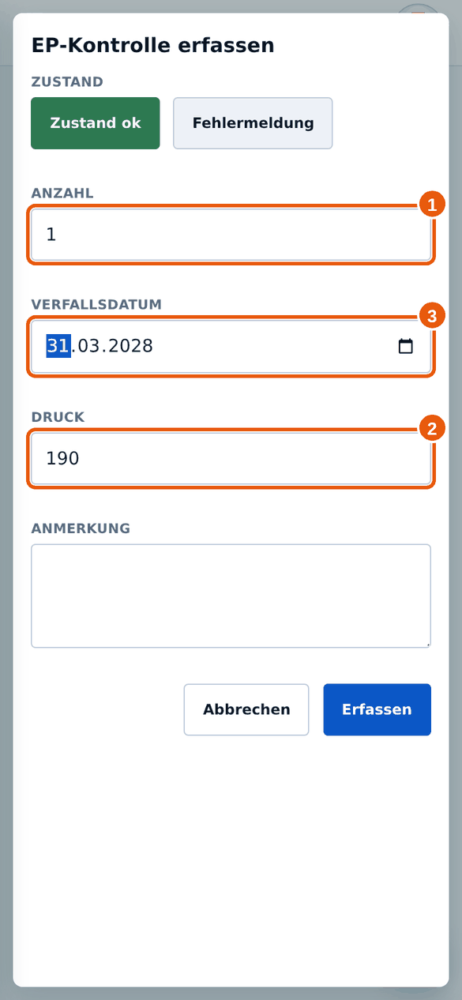

3.2EP-Kontrolle erfassen
Wann brauchst du das? Du kontrollierst ein Fahrzeug, einen Rucksack oder Koffer und meldest den Zustand.
✔Das brauchst du vorher
- Du hast die Einsatzposition geöffnet (siehe Einsatzposition finden).
- Du hast das Material vor dir und kannst zählen und Daten ablesen.
Jede Kontrolle mit einer Anzahl legt einen neuen Eintrag an. Sie ersetzt keinen alten. Trägst du dieselbe Charge zweimal ein, zählt Milan sie doppelt.
Schaue deshalb immer erst unter Aktuelle Chargen nach: Steht die Charge dort schon mit der richtigen Zahl, melde nur den Zustand und lasse die Anzahl leer. Stimmt die Zahl nicht, korrigiere sie dort mit + und − (siehe Chargen korrigieren).
- Tippe in der Detailansicht auf + EP-Kontrolle erfassen 1.

1 EP-Kontrolle erfassen. - Wähle bei 1 den Zustand: Zustand ok, wenn alles in Ordnung ist, sonst Fehlermeldung (siehe Fehler melden).

1 Zustand, 2 Anzahl, 3 Verfallsdatum, 4 Erfassen. - Trage bei 2 Anzahl die Stückzahl ein, die du neu meldest. Bei einer reinen Zustandsmeldung lässt du das Feld leer.
- Bei Produkten mit Verfallsdatum erscheint 3 Verfallsdatum. Trage das Datum von der Packung ein. Haben deine Packungen verschiedene Daten, melde jedes Datum einzeln: eine Kontrolle pro Datum.
- Tippe auf Erfassen 4. Unten erscheint „EP-Kontrolle erfasst.“
Sonderfall Sauerstoff
- Bei Sauerstoffflaschen gibt es zusätzlich das Feld Druck 2. Trage die Anzahl 1, den Flaschendruck, den das Manometer zeigt 2, und das Verfallsdatum 3 ein. Druck und Verfallsdatum gehören immer zu einer Anzahl.

1 Anzahl, 2 Druck, 3 Verfallsdatum.
Bei manchen Arzneimitteln erscheint dieses Feld. Wenn die Packung einen SecurPharm-Code (2D-Code) trägt, scanne ihn oder füge ihn ein und tippe auf Übernehmen. Milan trägt das Verfallsdatum dann selbst ein. Kein Code, kein Problem: Datum einfach selbst eintragen.
| Du siehst … | Das bedeutet |
|---|---|
| Feld Verfallsdatum | Das Produkt hat ein Verfallsdatum. Eintragen ist Pflicht, sobald du eine Anzahl größer als 0 meldest. |
| Feld Druck | Nur bei Sauerstoff. |
| Weder Datum noch Druck | Das Produkt hat kein Verfallsdatum. Es zählt nur Zustand und Anzahl. |
Ich habe „Bitte Status und/oder Anzahl angeben“ gesehen.
Wähle entweder Zustand ok oder Fehlermeldung, trage eine Anzahl ein, oder beides. Ganz leer geht nicht.
Ich habe eine Charge doppelt eingetragen.
Öffne Aktuelle Chargen. Die doppelte Zeile kannst du mit „Als verbraucht markieren“ aus der aktuellen Liste nehmen. Sage dem Materialwart danach kurz Bescheid.
Das Verfallsdatum ist schon abgelaufen.
Melde es trotzdem ehrlich. Milan zeigt abgelaufenes Material mit Warnung an. Tausche die Ware aus und melde die neue Charge.